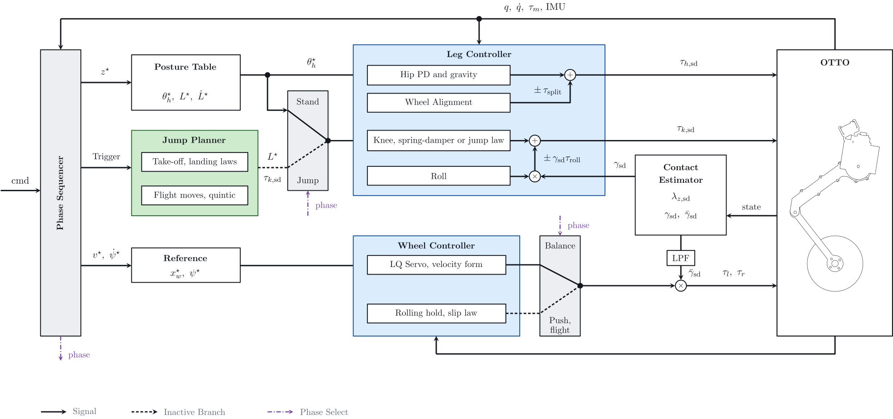

Overview
This topic is the baseline capability of the physical OTTO, the reference that the somersault work builds on. The robot balances on its two wheels, follows a commanded speed and yaw rate, holds a commanded height, and keeps its body level with one wheel on uneven ground.
The baseline controller was developed in simulation for the ICRA 2026 OTTO platform and ported to the physical robot, where unmodeled real-world effects required substantial retuning. The robot therefore has an existing capability of driving, balancing and jumping, and this topic measures it.
System
| Control Rate | Both controllers run as ros2_control plugins at 1000 Hz |
|---|---|
| Power | Cable from a bench supply on the 48 V bus |
| Software | ROS 2 Jazzy, ros2_control |
Process
Control the wheels
A LQ servo on the wheeled inverted pendulum, with position and heading integrals in velocity form, balances the robot and tracks the commanded speed and yaw rate.
Control the legs
The legs have four jobs.
- Set the posture and height from a table of hip and knee angles.
- Compensate gravity.
- Keep the body level by the difference between the two leg lengths.
- Align the wheels by the difference between the two hip angles.
Estimate the contact
The ground force comes from the rigid-body dynamics, and a contact gate feeds the roll task and the wheel torque limit.
Sequence the commands
A phase sequencer routes the operator command, sending the height command to the posture table and the speed and yaw rate commands to the wheel controller.
Figures and Video
